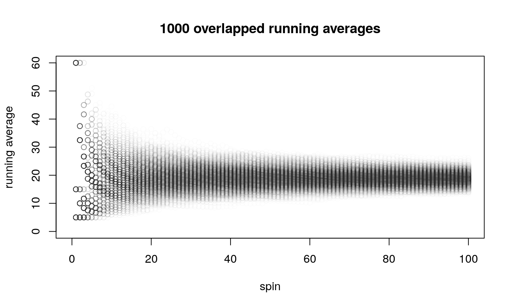

- Randomness
- Summarizing results
- Probability (predicting results)
- Central Limit Theorem
- Inference (interpreting results)
- Study Design
Outline
Randomness
- Common random-number generators: dice, spinners, cards, coins, tops…
- Discussion: How long will it take to get home?
- Some deterministic systems are treated as random.
Randomness 2
There are different types of data we can generate.
- Categorical (orderless categories)
- e.g. Heart, Diamond, Spade, Club
- Ordinal (ordered categories)
- e.g. Terrible, Bad, Okay, Good, Excellent
- Discrete (usually a few numerical possibilities)
- e.g. The possible winnings of a scratch-off lottery
- a standard 6-sided die
- Continuous (numerical with infinite number of possibilities)
- e.g. The exact direction a spinner stops
- The exact amount of time a cormorant stays underwater
Categorical data generation
Discrete data generation
Continuous data generation
Summarizing
- Raw data is overwhelming.

Summarizing 2, Frequency Table
- So, instead we summarize.
| Color | Frequency | Relative Frequency |
|---|---|---|
| Green | 23 | \(\frac{23}{64}\approx0.3594\) |
| Yellow | 6 | \(\frac{6}{64}\approx0.0938\) |
| Red | 35 | \(\frac{35}{64}\approx0.5469\) |
Summarizing 3, Bar Chart
- So, instead we summarize. We are visual creatures…
Probability
A wedge's size determines its long-run relative frequency.
Probability 2
Long-run average winnings can be predicted. \[(0.5\times 5) + (0.3\times 15) + (0.2\times 60) = 19\]
Central Limit Theorem
If you repeat the previous procedure 1000 times…

Central Limit Theorem 2
If you repeat the previous procedure 1000 times…